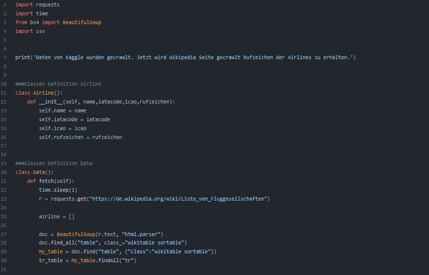
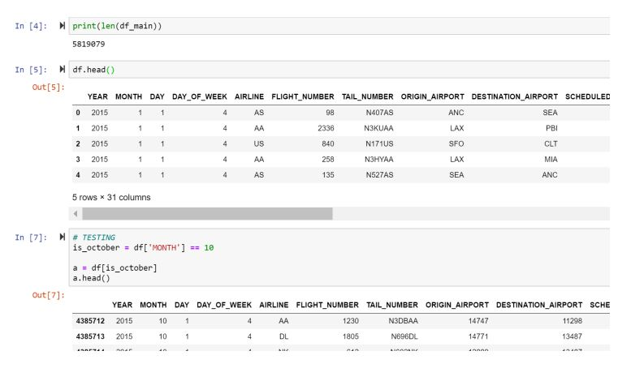
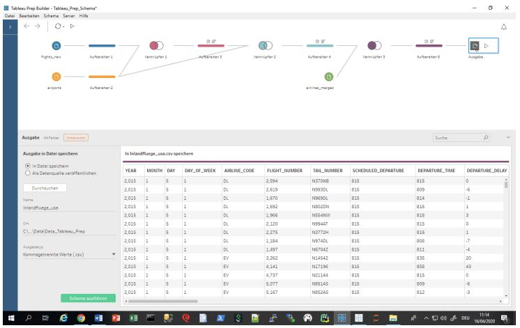
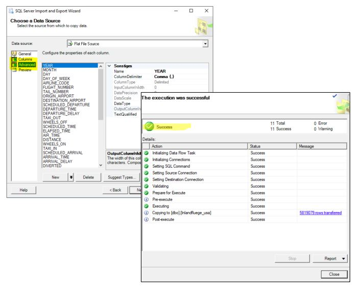
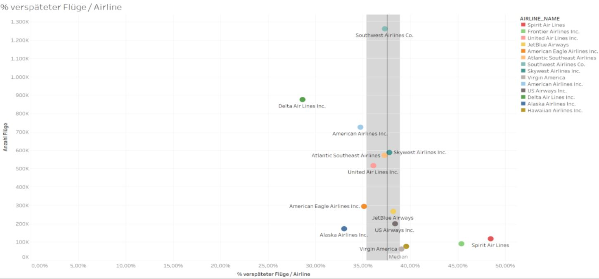
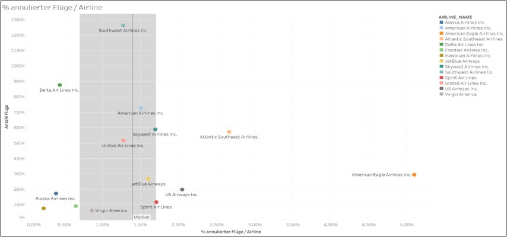

An Analysis of US Airline Data.
#ETL #Kaggle #Crawler #Python #Selenium #BeautifulSoup #Pandas #Numpy #TableauPrep #MicrosoftSQLServer #TableauDesktop

An Analysis of US Airline Data.
#ETL #Kaggle #Crawler #Python #Selenium #BeautifulSoup #Pandas #Numpy #TableauPrep #MicrosoftSQLServer #TableauDesktop
This project was conducted for a course at Project at Lucerne University of Applied Sciences and Arts. The project members were Stefan Berchtold, Remo Oehninger, Gianni Pinelli and myself.
We wanted to answer the questions: Which US airlines are most punctual, the most delayed, have the most cancelled and rerouted flights (in a given time period). To answer the questions we collected, transformed and visualised data.
For this project we used 2015 Flight Delays and Cancellation dataset from kaggle.We created a kaggle account. But we did not want to "just download" the files. We wanted to do it automatically (It would have been faster in the end.) So we created a Crawler, which logged into a Kaggle account, navigated to the dataset, downloaded the dataset and extracted the zip-file. We used the framework selenium and python to automate this step. The python code can be found here: Crawler on Github.

To enrich the data from kaggle. we crawled data from this wikipedia wikipedia site too. To do this step we used the Python library BeautifulSoup.The python code can be found here: Crawler on Github.
The crawled data could not be used directly. The data quality was not as good as we expected it. Therefore, we had to analyse the data, clean the data and transform the data, so that it can be used for further analysis. Firstly, we worked on the data in jupyter notebooks,than we transformed the code to python-files. The python code can be found here: Data Cleaner on Github.
The datasets flights.csv from kaggle and the airports.csv file from wikipedia had to be transformed and merged. We used Tableau Prep for this step (The usage of Tableau Prep had to be shown.)
The now cleaned and transformed datasets had to be loaded on a SQL-Database. We used the Microsoft SQL-Server to execute this step, by loading the csv-Files via wizard to the database.
Tableau was used to visualise the data. Since we already had the data in the database, we had to simply connect to it.
Spirit Air Lines had the most delayed flights. 48% of the flights of Spirit Air Lines were delayed.
The airline with the most punctual flights was Delta Air lines with 71% of all flights.
American Eagle cancelled 5.1% of their flights.
Atlantic Southeast Airlines rerouted 0.35% of their flights.